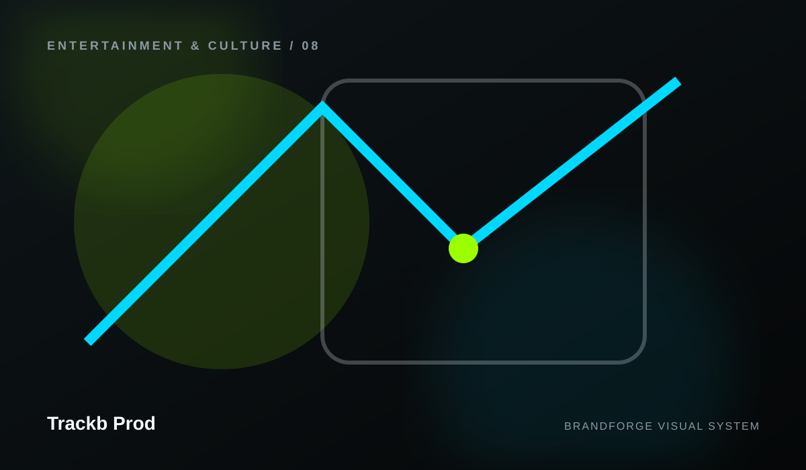

Clarity before decoration
A premium experience should feel easy to understand. Visual impact supports the message instead of competing with it.
Trackb Prod
The design and publishing principles used throughout Trackb Prod.

A premium experience should feel easy to understand. Visual impact supports the message instead of competing with it.
A complete site can include many pages and sections while still maintaining strong hierarchy and calm navigation.
Generated SVG artwork ships with the site so important imagery cannot disappear because a remote image URL changed.
Components are designed to reflow intentionally across large screens, laptops, tablets, and phones.
Semantic markup, focus states, keyboard navigation, reduced-motion support, and readable contrast are part of the base system.
The generator avoids invented customers, testimonials, prices, addresses, certifications, performance metrics, and business guarantees.